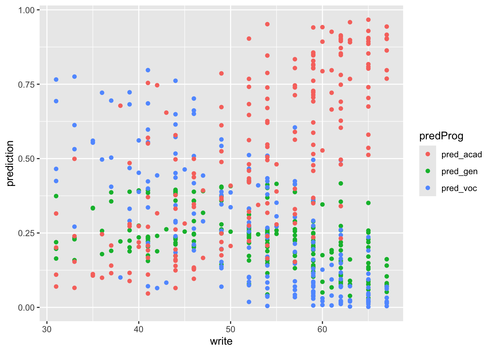
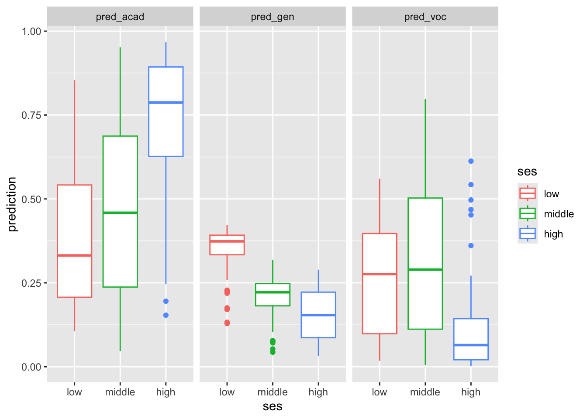

Chapter 7 Generalized Linear Models (Binomial)
7.1 Students dataset
We want to analyze how students choose the study program from general, academic and technic (vocation)
ses: socio-economic statusschtyp: school typeread, write, math, science: grade/score for each subject
library(readr)
# load the data
# tsv - similar format to csv
students <- read_delim("./datasets/students.tsv", delim = "\t", col_types = cols(
id = col_double(),
female = col_factor(),
ses = col_factor(),
schtyp = col_factor(),
prog = col_factor(),
read = col_double(),
write = col_double(),
math = col_double(),
science = col_double()
))
# or with RData file
load("./datasets/students.RData")
head(students)## # A tibble: 6 × 9
## id female ses schtyp prog read write math science
## <dbl> <fct> <fct> <fct> <fct> <dbl> <dbl> <dbl> <dbl>
## 1 1 female low public vocation 34 44 40 39
## 2 2 female middle public vocation 39 41 33 42
## 3 3 male low public academic 63 65 48 63
## 4 4 female low public academic 44 50 41 39
## 5 5 male low public academic 47 40 43 45
## 6 6 female low public academic 47 41 46 407.2 EDA
As usual, a bit of data exploration before performing any statistical analysis.
# count the occurrences of all classes combinations (in prog and ses)
with(students, table(ses, prog))## prog
## ses vocation academic general
## low 12 19 16
## middle 31 44 20
## high 7 42 9# using students dataframe attributes,
# call the rbind function using as arguments
# the result of the tapply operation,
# that is three vectors with mean and sd for the
# levels of `prog`
#
# the result is a 3x2 dataframe with mean and sd
# of the two columns
with(students, {
do.call(rbind, tapply(write, prog,
function(x) c(m = mean(x), s = sd(x))))
})## m s
## vocation 46.76000 9.318754
## academic 56.25714 7.943343
## general 51.33333 9.397775# or, with dplyr
library(dplyr)
library(reshape2)##
## Attaching package: 'reshape2'## The following object is masked from 'package:tidyr':
##
## smithsstudents %>%
group_by(prog) %>%
summarise(mean = mean(write), sd = sd(write))## # A tibble: 3 × 3
## prog mean sd
## <fct> <dbl> <dbl>
## 1 vocation 46.8 9.32
## 2 academic 56.3 7.94
## 3 general 51.3 9.40# simple way: do this for every program
mean(students$write[students$prog == "general"])## [1] 51.333337.2.1 Plots
Boxplots allow to have a view of the distribution of a numeric variable over classes in a minimal representation. It shows first, second (median) and third quartiles, plus some outliers if present.
# boxplot in R
boxplot(students$write ~ students$prog)
# precise boundaries (numbers) are found with the `quantile()` function
with(students, {
quantile(write[prog == "vocation"], prob = seq(0, 1, by = .25))
}
)## 0% 25% 50% 75% 100%
## 31.00 40.25 46.00 53.50 67.00# boxplot in ggplot
library(ggplot2)
students %>%
ggplot(aes(prog, write)) +
geom_boxplot()
#geom_violin() # try also the "violin plot"We can also put all subjects together, but we need to
switch to long format with melt.
# view of the grades distribution depending
# on subject and program
students %>%
reshape2::melt(measure.vars = c("write", "science", "math", "read"),
variable.name = "subject",
value.name = "grade") %>%
ggplot() +
geom_boxplot(aes(prog, grade, fill = subject))# or in different plots with
# ...
# geom_boxplot(aes(prog, grade)) +
# facet_wrap(~ subject) # instead of 7.3 Test
We can further analyse the dataset attributes with some tests and traditional linear regression fit.
with(students %>% filter(prog != "vocation"), {
tt_wp <- t.test(write[prog == "general"], # are the two prog distributed the same way?
write[prog == "academic"], var.equal = TRUE)
lm_wp <- summary(lm(write ~ prog)) # lm with qualitative predictor
anova_wp <- summary(aov(write ~ prog)) # anova
list(tt_wp, lm_wp, anova_wp)
})## [[1]]
##
## Two Sample t-test
##
## data: write[prog == "general"] and write[prog == "academic"]
## t = -3.289, df = 148, p-value = 0.001256
## alternative hypothesis: true difference in means is not equal to 0
## 95 percent confidence interval:
## -7.882132 -1.965487
## sample estimates:
## mean of x mean of y
## 51.33333 56.25714
##
##
## [[2]]
##
## Call:
## lm(formula = write ~ prog)
##
## Residuals:
## Min 1Q Median 3Q Max
## -23.257 -4.257 2.705 5.743 15.667
##
## Coefficients:
## Estimate Std. Error t value Pr(>|t|)
## (Intercept) 56.257 0.820 68.610 < 2e-16 ***
## proggeneral -4.924 1.497 -3.289 0.00126 **
## ---
## Signif. codes: 0 '***' 0.001 '**' 0.01 '*' 0.05 '.' 0.1 ' ' 1
##
## Residual standard error: 8.402 on 148 degrees of freedom
## Multiple R-squared: 0.06811, Adjusted R-squared: 0.06182
## F-statistic: 10.82 on 1 and 148 DF, p-value: 0.001256
##
##
## [[3]]
## Df Sum Sq Mean Sq F value Pr(>F)
## prog 1 764 763.7 10.82 0.00126 **
## Residuals 148 10448 70.6
## ---
## Signif. codes: 0 '***' 0.001 '**' 0.01 '*' 0.05 '.' 0.1 ' ' 1Notice how the T-test t-value is equal to the linear model coefficient estimate t-value. They are computed the same way.
7.4 Generalized Linear Model
The \(X\)s have to be independent, thus we check the correlation plots.
library(GGally)
students %>%
dplyr::select(math, science, write, read) %>%
ggpairs(progress = FALSE)In order to be able to use the Binomial generalized linear model
and set the program as response variable, we have to make a new
dataset in which we define a binary class instead of a three levels
factor. Here we arbitrarily choose to create a variable which is
1 for vocation and 0 for general.
# create a new dataframe
students_vg <- students %>%
filter(prog != "academic") %>% # make distinction vocation-general only
mutate(vocation = ifelse(prog == "vocation", 1, 0)) # transform class to binary
voc_glm <- glm(vocation ~ ses + schtyp + read + write + math, # choose some predictors
data = students_vg, family = "binomial") # fit glm with binomial link # new pipe operator (base R 4.2 or later) allows to send
# pipe results to any function parameter (not just the first one)
# and it's compatible with lm/glm calls (no need to create new datasets)
voc_glm <- students |>
filter(prog != "academic") |>
mutate(vocation = ifelse(prog == "vocation", 1, 0)) |>
glm(vocation ~ ses + schtyp + read + write + math,
data = _, family = "binomial")
# `_` is placeholder for the piped dataframesummary(voc_glm)##
## Call:
## glm(formula = vocation ~ ses + schtyp + read + write + math,
## family = "binomial", data = students_vg)
##
## Deviance Residuals:
## Min 1Q Median 3Q Max
## -1.8826 -1.0822 0.6403 0.9776 1.7012
##
## Coefficients:
## Estimate Std. Error z value Pr(>|z|)
## (Intercept) 3.78961 1.62184 2.337 0.0195 *
## sesmiddle 1.04148 0.53206 1.957 0.0503 .
## seshigh 0.42122 0.68145 0.618 0.5365
## schtypprivate -1.06617 0.87344 -1.221 0.2222
## read -0.02558 0.02940 -0.870 0.3843
## write -0.02011 0.02836 -0.709 0.4782
## math -0.04175 0.03438 -1.214 0.2246
## ---
## Signif. codes: 0 '***' 0.001 '**' 0.01 '*' 0.05 '.' 0.1 ' ' 1
##
## (Dispersion parameter for binomial family taken to be 1)
##
## Null deviance: 131.43 on 94 degrees of freedom
## Residual deviance: 118.24 on 88 degrees of freedom
## AIC: 132.24
##
## Number of Fisher Scoring iterations: 4In the summary output, few differences from the lm call
can be noticed:
- the p-value for each coefficient is determined through a z-test instead of an exact t-test;
- R-squared cannot be computed (there are no residuals) and the
deviance is printed instead:
Null deviancerepresents the distance of the null model (which has only the intercept) from a “perfect” saturated modelResidual deviancecompares the fit with the saturated model (with number of parameters equal to the number of observations)
We can do the same thing with the pair academic/general.
students_ag <- students %>%
filter(prog != "vocation") %>%
mutate(academic = ifelse(prog == "academic", 1, 0))
academic_glm <- glm(academic ~ ses + schtyp + read + write + math, # same predictors
data = students_ag, family = "binomial")
summary(academic_glm)##
## Call:
## glm(formula = academic ~ ses + schtyp + read + write + math,
## family = "binomial", data = students_ag)
##
## Deviance Residuals:
## Min 1Q Median 3Q Max
## -1.9963 -0.9715 0.5348 0.8348 1.4766
##
## Coefficients:
## Estimate Std. Error z value Pr(>|z|)
## (Intercept) -5.07477 1.47499 -3.441 0.000581 ***
## sesmiddle 0.23316 0.47768 0.488 0.625471
## seshigh 0.77579 0.54950 1.412 0.158004
## schtypprivate 0.61998 0.53668 1.155 0.248007
## read 0.02441 0.02793 0.874 0.382069
## write 0.01130 0.02753 0.411 0.681416
## math 0.06720 0.03164 2.124 0.033689 *
## ---
## Signif. codes: 0 '***' 0.001 '**' 0.01 '*' 0.05 '.' 0.1 ' ' 1
##
## (Dispersion parameter for binomial family taken to be 1)
##
## Null deviance: 183.26 on 149 degrees of freedom
## Residual deviance: 157.94 on 143 degrees of freedom
## AIC: 171.94
##
## Number of Fisher Scoring iterations: 4Of course, we get different coefficient estimates with different models. We can compare them:
cbind(summary(voc_glm)$coefficients[, c(1, 4)],
summary(academic_glm)$coefficients[, c(1, 4)])## Estimate Pr(>|z|) Estimate Pr(>|z|)
## (Intercept) 3.78961265 0.01945937 -5.07476526 0.0005805405
## sesmiddle 1.04148131 0.05029279 0.23316035 0.6254706198
## seshigh 0.42121982 0.53649208 0.77579361 0.1580040841
## schtypprivate -1.06616814 0.22221864 0.61997866 0.2480066053
## read -0.02557603 0.38428691 0.02441089 0.3820686083
## write -0.02011257 0.47821104 0.01130034 0.6814162867
## math -0.04175324 0.22462769 0.06720110 0.0336894120Let’s use step to chose the minimal set of useful predictors:
it analyzes AIC for each combination of predictors, by progressively
fitting a model with less and less predictors. The way it proceeds is the
following:
- fit the complete model,
- for each of the predictors, fit another model with all but that predictor,
- compare the AIC of all these models (
<none>is the complete) and keep the one with the highest AIC; - repeat until the best model is found (i.e.
<none>has highest AIC score)
Notice how this procedure can lead to sub-optimal models, since it doesn’t try all possible predictors combinations, but rather finds a greedy solution to this search.
?stepstep_voc <- step(voc_glm)## Start: AIC=132.24
## vocation ~ ses + schtyp + read + write + math
##
## Df Deviance AIC
## - write 1 118.74 130.74
## - read 1 119.00 131.00
## - math 1 119.75 131.75
## - schtyp 1 119.90 131.90
## <none> 118.24 132.24
## - ses 2 122.42 132.42
##
## Step: AIC=130.74
## vocation ~ ses + schtyp + read + math
##
## Df Deviance AIC
## - read 1 120.25 130.25
## - schtyp 1 120.64 130.64
## <none> 118.74 130.74
## - math 1 121.07 131.07
## - ses 2 123.60 131.60
##
## Step: AIC=130.25
## vocation ~ ses + schtyp + math
##
## Df Deviance AIC
## - schtyp 1 122.23 130.23
## <none> 120.25 130.25
## - ses 2 124.51 130.51
## - math 1 125.30 133.30
##
## Step: AIC=130.23
## vocation ~ ses + math
##
## Df Deviance AIC
## <none> 122.23 130.23
## - ses 2 126.33 130.33
## - math 1 128.48 134.48summary(step_voc)##
## Call:
## glm(formula = vocation ~ ses + math, family = "binomial", data = students_vg)
##
## Deviance Residuals:
## Min 1Q Median 3Q Max
## -1.8213 -1.1237 0.7153 1.0925 1.8076
##
## Coefficients:
## Estimate Std. Error z value Pr(>|z|)
## (Intercept) 2.97676 1.41738 2.100 0.0357 *
## sesmiddle 0.97663 0.50784 1.923 0.0545 .
## seshigh 0.34949 0.66611 0.525 0.5998
## math -0.07160 0.03016 -2.374 0.0176 *
## ---
## Signif. codes: 0 '***' 0.001 '**' 0.01 '*' 0.05 '.' 0.1 ' ' 1
##
## (Dispersion parameter for binomial family taken to be 1)
##
## Null deviance: 131.43 on 94 degrees of freedom
## Residual deviance: 122.23 on 91 degrees of freedom
## AIC: 130.23
##
## Number of Fisher Scoring iterations: 4# run this and check the results
step_academic <- step(academic_glm)
summary(step_academic)7.4.1 Predictions
Working with generalized linear models, we can choose whether to get the logit estimate
\[ g(\mu) = \eta = X \hat\beta \]
or the response probabilities, which is simply the inverse of the logit.
head(voc_glm$fitted.values)## 1 2 3 4 5 6
## 0.5902369 0.8363280 0.6098686 0.6217618 0.7541615 0.7456350head(predict(voc_glm, newdata = students, type = "response")) # probs## 1 2 3 4 5 6
## 0.5902369 0.8363280 0.2435802 0.4866921 0.4969118 0.4606502head(predict(voc_glm, newdata = students)) # logit## 1 2 3 4 5 6
## 0.36494483 1.63115634 -1.13315009 -0.05324419 -0.01235304 -0.15772532Exercise: compute the inverse of the logit (manually) and verify that it equals the response found with
predict(solution is in the Rmarkdown file).
The reason why we fitted two complementary models, is that we can combine the results to obtain predictions for both three programs together.
The logits are so defined for the two models: \[ X_{vg}\beta_{vg} = \log\left(\frac{\pi_{v}}{\pi_g}\right)\,,\\ X_{ag}\beta_{ag} = \log\left(\frac{\pi_{a}}{\pi_g}\right)\,, \]
and knowing that \(\pi_v + \pi_g + \pi_a = 1\) we have
\[ \pi_g = \left(\frac{\pi_v}{\pi_g} + \frac{\pi_a}{\pi_g} + 1\right)^{-1}\,. \]
With some manipulation, replacing this result in the logits above, we can show that, for each class \(v, g, a\):
\[ \pi_v = \frac{e^{X_{vg}\beta_{vg}}}{1 + e^{X_{vg}\beta_{vg}} + e^{X_{ag}\beta_{ag}}}\,. \]
This formula is also called softmax, which converts numbers to probabilities (instead of just taking the max index, “hard”-max)
Let’s do this in R
exp_voc <- exp(predict(voc_glm, type = "link", newdata = students))
exp_academic <- exp(predict(academic_glm, type = "link", newdata = students))norm_const <- 1 + exp_voc + exp_academic
pred <- tibble(pred_gen = 1, pred_voc = exp_voc,
pred_acad = exp_academic) / norm_const
head(pred)## pred_gen pred_voc pred_acad
## 1 0.3588022 0.5168311 0.12436676
## 2 0.1560455 0.7973583 0.04659614
## 3 0.3510001 0.1130281 0.53597187
## 4 0.4074066 0.3862819 0.20631153
## 5 0.3930219 0.3881968 0.21878130
## 6 0.3932633 0.3358800 0.27085675Predictions must sum to 1 (they’re normalized).
rowSums(pred)## [1] 1 1 1 1 1 1 1 1 1 1 1 1 1 1 1 1 1 1 1 1 1 1 1 1 1 1 1 1 1 1 1 1 1 1 1 1 1
## [38] 1 1 1 1 1 1 1 1 1 1 1 1 1 1 1 1 1 1 1 1 1 1 1 1 1 1 1 1 1 1 1 1 1 1 1 1 1
## [75] 1 1 1 1 1 1 1 1 1 1 1 1 1 1 1 1 1 1 1 1 1 1 1 1 1 1 1 1 1 1 1 1 1 1 1 1 1
## [112] 1 1 1 1 1 1 1 1 1 1 1 1 1 1 1 1 1 1 1 1 1 1 1 1 1 1 1 1 1 1 1 1 1 1 1 1 1
## [149] 1 1 1 1 1 1 1 1 1 1 1 1 1 1 1 1 1 1 1 1 1 1 1 1 1 1 1 1 1 1 1 1 1 1 1 1 1
## [186] 1 1 1 1 1 1 1 1 1 1 1 1 1 1 17.5 Graphic interpretation
These are some of the ways we can visualize the results. The plots interpretation is left as exercise.
pred_stud_long <- bind_cols(pred, students) %>%
reshape2::melt(measure.vars = 1:3,
variable.name = "predProg",
value.name = "prediction")
pred_stud_long %>%
ggplot() +
geom_point(aes(write, prediction, color = predProg))
pred_stud_long %>%
ggplot() +
geom_point(aes(math, prediction, color = predProg))pred_stud_long %>%
ggplot() +
geom_boxplot(aes(ses, prediction, color = ses)) +
facet_wrap(~ predProg)
7.6 Other tests
The models fitted so fare are not the only one that can give insights on the data. Here’s some other models and tests made with arbitrary data. Feel free to further experiment the dataset.
# to run this, make sure you have R 4.2 installed.
# otherwise use the alternative way shown in the section above
general_glm <- students |>
mutate(general = ifelse(prog == "general", 1, 0)) |>
glm(general ~ ses + schtyp + read + write + math,
data = _, family = "binomial")
summary(general_glm)##
## Call:
## glm(formula = general ~ ses + schtyp + read + write + math, family = "binomial",
## data = mutate(students, general = ifelse(prog == "general",
## 1, 0)))
##
## Deviance Residuals:
## Min 1Q Median 3Q Max
## -1.0551 -0.7347 -0.6201 -0.4674 1.9822
##
## Coefficients:
## Estimate Std. Error z value Pr(>|z|)
## (Intercept) 0.888726 1.139382 0.780 0.435
## sesmiddle -0.548233 0.411069 -1.334 0.182
## seshigh -0.787325 0.503662 -1.563 0.118
## schtypprivate -0.050761 0.507839 -0.100 0.920
## read -0.011416 0.024227 -0.471 0.637
## write 0.009743 0.024416 0.399 0.690
## math -0.030597 0.027101 -1.129 0.259
##
## (Dispersion parameter for binomial family taken to be 1)
##
## Null deviance: 213.27 on 199 degrees of freedom
## Residual deviance: 205.11 on 193 degrees of freedom
## AIC: 219.11
##
## Number of Fisher Scoring iterations: 4general_alt_glm <- students |> # notice no filter on prog != "academic"
mutate(general = ifelse(prog == "vocation", 1, 0)) |>
glm(general ~ ses + read + write + math,
data = _, family = "binomial")
summary(general_alt_glm)##
## Call:
## glm(formula = general ~ ses + read + write + math, family = "binomial",
## data = mutate(students, general = ifelse(prog == "vocation",
## 1, 0)))
##
## Deviance Residuals:
## Min 1Q Median 3Q Max
## -1.74706 -0.73510 -0.39743 0.04884 2.68010
##
## Coefficients:
## Estimate Std. Error z value Pr(>|z|)
## (Intercept) 6.11922 1.38391 4.422 9.79e-06 ***
## sesmiddle 0.83768 0.45392 1.845 0.0650 .
## seshigh -0.12410 0.58500 -0.212 0.8320
## read -0.03261 0.02672 -1.220 0.2223
## write -0.04151 0.02452 -1.693 0.0904 .
## math -0.07799 0.03054 -2.554 0.0107 *
## ---
## Signif. codes: 0 '***' 0.001 '**' 0.01 '*' 0.05 '.' 0.1 ' ' 1
##
## (Dispersion parameter for binomial family taken to be 1)
##
## Null deviance: 224.93 on 199 degrees of freedom
## Residual deviance: 179.08 on 194 degrees of freedom
## AIC: 191.08
##
## Number of Fisher Scoring iterations: 5testdata <- tibble(ses = c("low","middle","high"),
write = mean(students$write),
math = mean(students$math),
read = mean(students$read))
testdata %>%
mutate(prob = predict(general_alt_glm, newdata = testdata, type = "response"))## # A tibble: 3 × 5
## ses write math read prob
## <chr> <dbl> <dbl> <dbl> <dbl>
## 1 low 52.8 52.6 52.2 0.132
## 2 middle 52.8 52.6 52.2 0.261
## 3 high 52.8 52.6 52.2 0.119testdata <- tibble(ses = "low",
write = c(30, 40, 50),
math = mean(students$math),
read = mean(students$read))
testdata %>%
mutate(prob = predict(general_alt_glm, newdata = testdata, type = "response"))## # A tibble: 3 × 5
## ses write math read prob
## <chr> <dbl> <dbl> <dbl> <dbl>
## 1 low 30 52.6 52.2 0.282
## 2 low 40 52.6 52.2 0.206
## 3 low 50 52.6 52.2 0.146